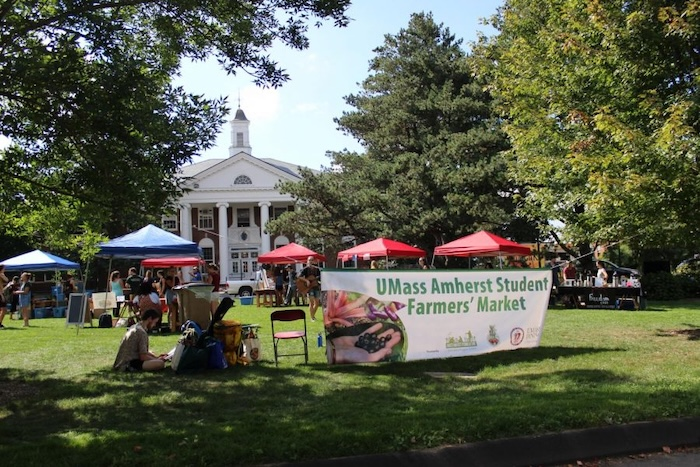

The UMass Amherst Student Farmer's Market takes place during the beginning of the fall semester and end of the spring semester on a weekly basis, and features products from fresh-grown fruits and vegetables to hand-crafted goods and gifts. All UMass students are encouraged to engage with the farmer's market, whether that be selling their own crafts or supporting their peers’ small businesses!
